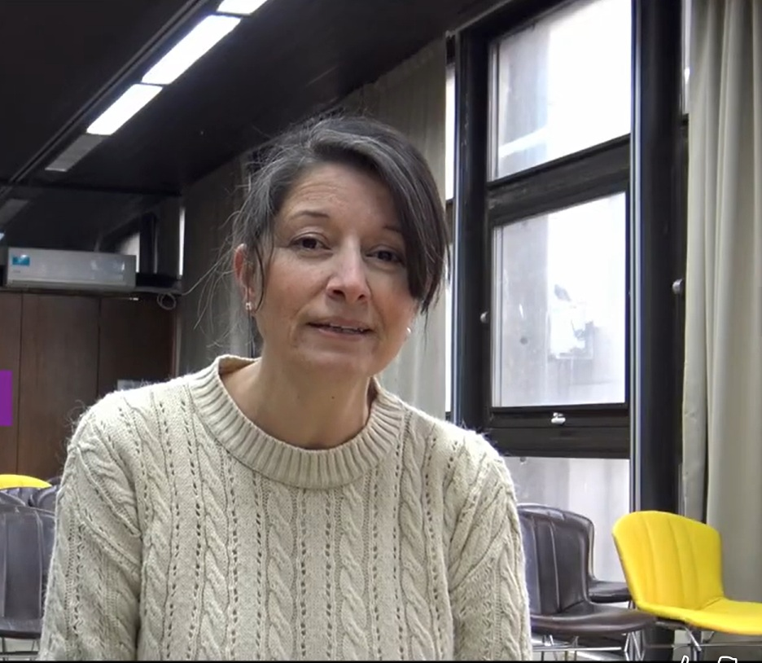

Verónica D'Angelo
Docente. Investigadora en CAEDHPSI (UAI)
Becaria postdoctoral CONICET

Investigación en psicología cognitiva, aprendizaje, educación y tecnología. Estudio cómo diversos procesos de abstracción y metacognitivos pueden promover el recuerdo y la transferencia de conceptos, por ejemplo, la configuración de los ejemplos, la analogía y la reelaboración de textos, y cómo las nuevas herramientas tecnológicas pueden contribuir en ese proceso.
Artículos
2026
- Effects of the diversity of examples on how L1 and L2 learners apply abstract concepts D'Angelo, V. y Trench, M. Learning and Instruction. Artículo
- Transferencia de conceptos básicos de programación de la escuela media a la universidad D'Angelo, V. y Hernández, A. M. Revista Digital Educación en Ingeniería, 21(41), 1–10. DOI
- Simplificación y reelaboración asistida con LLM: un enfoque modular basado en prompting para la comprensión de textos expositivos D'Angelo, V. RAIA, 10(1). Revista
2025
- Innovar en la formación inicial de futuros ingenieros: un análisis multidimensional situado de sostenibilidad de prácticas educativas mediatizadas integrando un Fab Lab Rodríguez, G. L., San Martín, P. S., Manero, L., D'Angelo, V. y Ades, D. Ingeniare. Revista Chilena de Ingeniería, 33. DOI
- La escritura en Ingeniería Informática: una herramienta para la comunicación, la abstracción y el conocimiento D'Angelo, V. Aula Universitaria, (26), e0057. DOI
- Del uso instrumental al enfoque epistémico: repensar la tecnología desde las ciencias del aprendizaje D'Angelo, V. y Díaz, P. Revista IRICE, (49), e2066. DOI
2024
- Programar en la universidad. Cuadernillo de apoyo cognitivo para el análisis de los procesos D'Angelo, V. Revista Colombiana de Computación, 25(1). DOI
- Software testing education. Teaching the concept of confirmation bias from a pragmatic perspective of reasoning D'Angelo, V. Studies in Psychology, 45(2–3), 297–337. DOI · Traducción al español
- La importancia de los ejemplos ilustrativos en el aprendizaje de conceptos declarativos D'Angelo, V. S. Revista de Psicología, 20(39), 44–73. DOI
2023
- Simulador de doble clic para adultos mayores con limitaciones motoras manuales D'Angelo, V. Revista Innovaciones Educativas, 25(39), 205–221. DOI
- Robótica en Fab Lab: introducción a la programación para estudiantes de Ingeniería Mecánica D'Angelo, V. S., Rodríguez, G. L., Sklate, M. F., Pairetti, C. I. y San Martín, P. S. Electronic Journal of SADIO (EJS), 22(1).
2022
- Percepción del uso de aplicaciones 3D de anatomía humana en estudiantes de Kinesiología D'Angelo, V. y Airasca, D. A. Investigación en Educación Médica, 11(44), 34–45. DOI
2021
2020
- Posibles aportes del razonamiento analógico al problema de la abstracción y transferencia en la enseñanza de programación D'Angelo, V. Revista Colombiana de Computación, 21(2), 71–82. DOI
2018
- La programación de ordenadores. Reflexiones sobre la necesidad de un abordaje interdisciplinar D'Angelo, V. Revista Iberoamericana de Ciencia, Tecnología y Sociedad (CTS), 13(39). Artículo
Libros
- Reelaboración de textos expositivos y accesibilidad: una aproximación desde la psicología cognitiva D'Angelo, V. Teseo, 2026. Leer en línea
- Algoritmos, estructuras de datos y procesos de pensamiento D'Angelo, V. Teseo, 2025. Leer en línea
- Conceptos computacionales con Arduino Caturegli, C. y D'Angelo, V. Buenos Aires: Teseo, 2022. Leer en línea
Capítulos de libro
- Ayudas semánticas en la resolución de problemas de cálculo proposicional D'Angelo, V. (2018). En Buenaventura, Rodríguez et al. (Eds.), Nuevos desafíos en educación. Una mirada interdisciplinaria (pp. 139–153). Buenos Aires: FLACSO Argentina. Enlace
Congresos
- Aprendizaje de conceptos abstractos en estudiantes que emplean el español como segunda lengua: efectos de la complejidad de las definiciones D'Angelo, V. y Trench, M. (2023). Congreso de la Asociación Argentina de Ciencias del Comportamiento, Buenos Aires.
- Enhancing distant analogical retrieval via generating abstract redescriptions of the target D'Angelo, V. y Trench, M. (2020). Póster, Conceptual Abstraction and Analogy in Natural and Artificial Systems, AAAI Symposium, Washington, DC. PDF
- Psicología y programación D'Angelo, V. (2017). III Jornadas de Jóvenes Investigadores/as en Educación y Psicología, FLACSO Argentina, Buenos Aires.
Tesis
- El uso de ejemplos ilustrativos durante el aprendizaje de conceptos declarativos Tesis de Doctorado. Universidad Nacional de Córdoba, 2023. Texto completo
- Técnicas de abstracción tardía para promover la transferencia Tesis de Maestría. FLACSO, Sede Académica Argentina, 2020. Texto completo